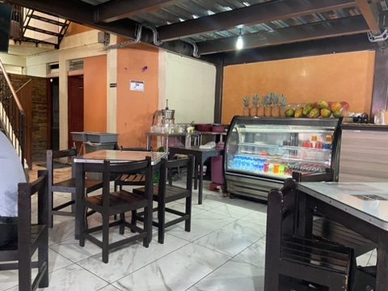
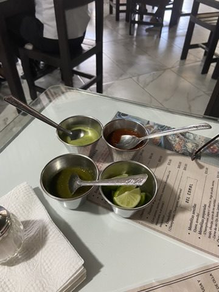
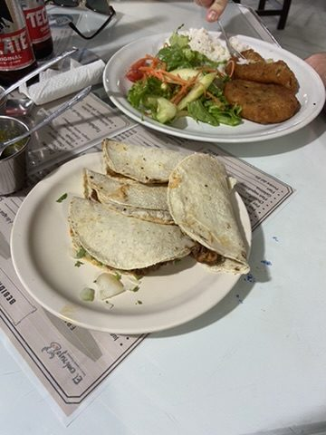
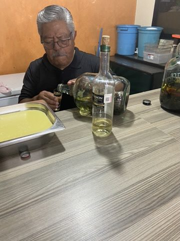
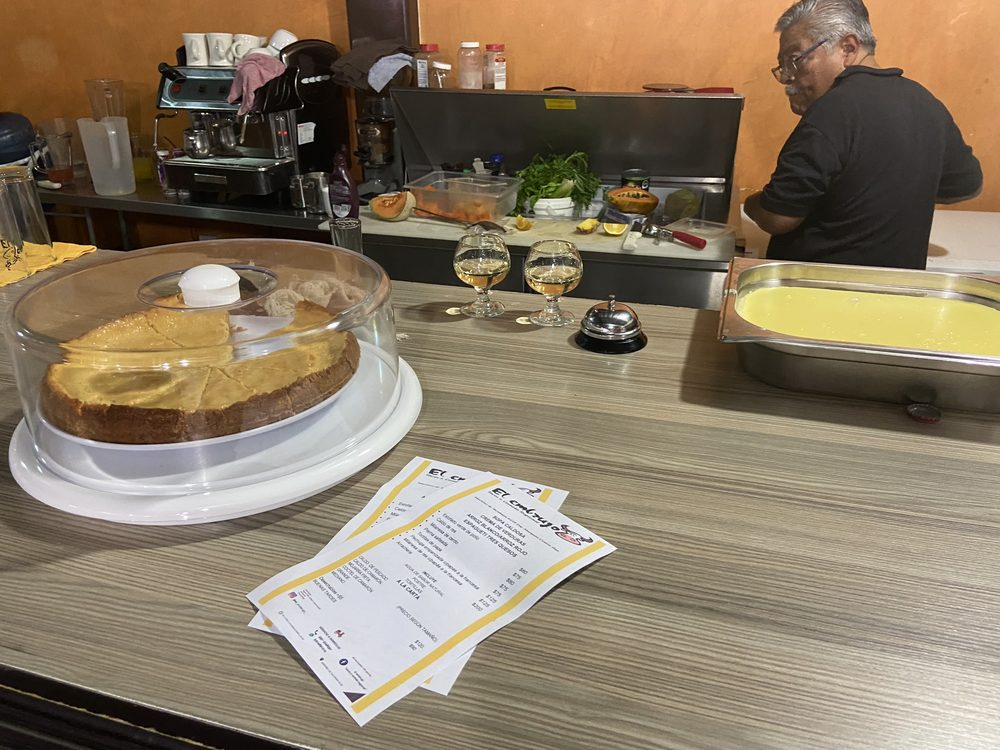
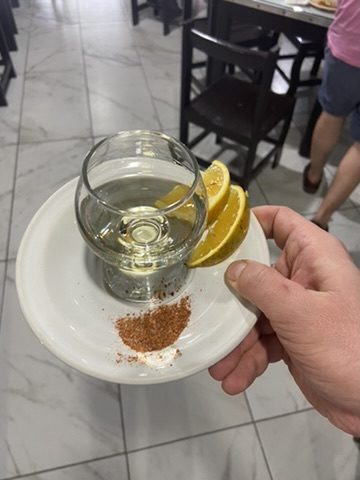
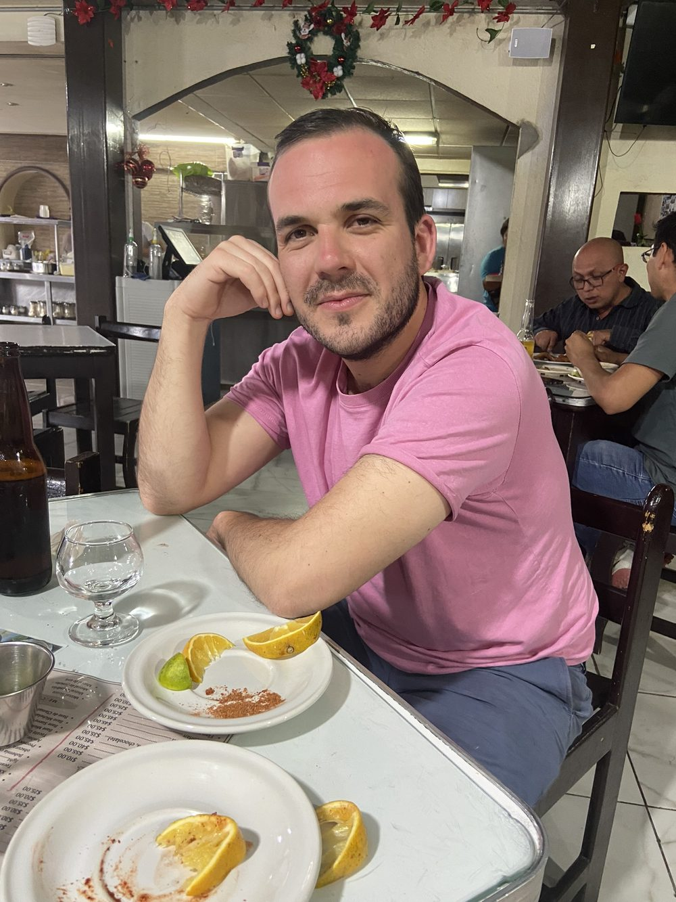
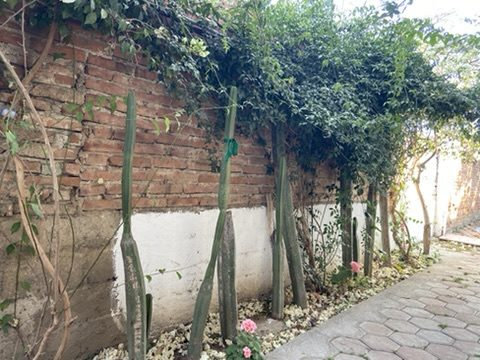

Comida im Comedor: Ein ruhiger Tag in der Stadt. Die Comida, die Hauptmahlzeit, gibt es in Mexiko am frühen Nachmittag – wir landen in einem einfachen Familienrestaurant: Quesadillas, Milanesa, dazu Salsas in allen Schärfegraden.



Mezcal: Nach dem Essen schenkt der Chef Mezcal aus der großen Flasche aus. Oaxaca produziert den Großteil des mexikanischen Mezcals, meist aus der Agave Espadín, deren Herzen in Erdöfen gegart werden – daher der rauchige Geschmack. Dazu: Orangenscheiben und Sal de gusano, Salz mit gemahlener Agavenraupe und Chili.




